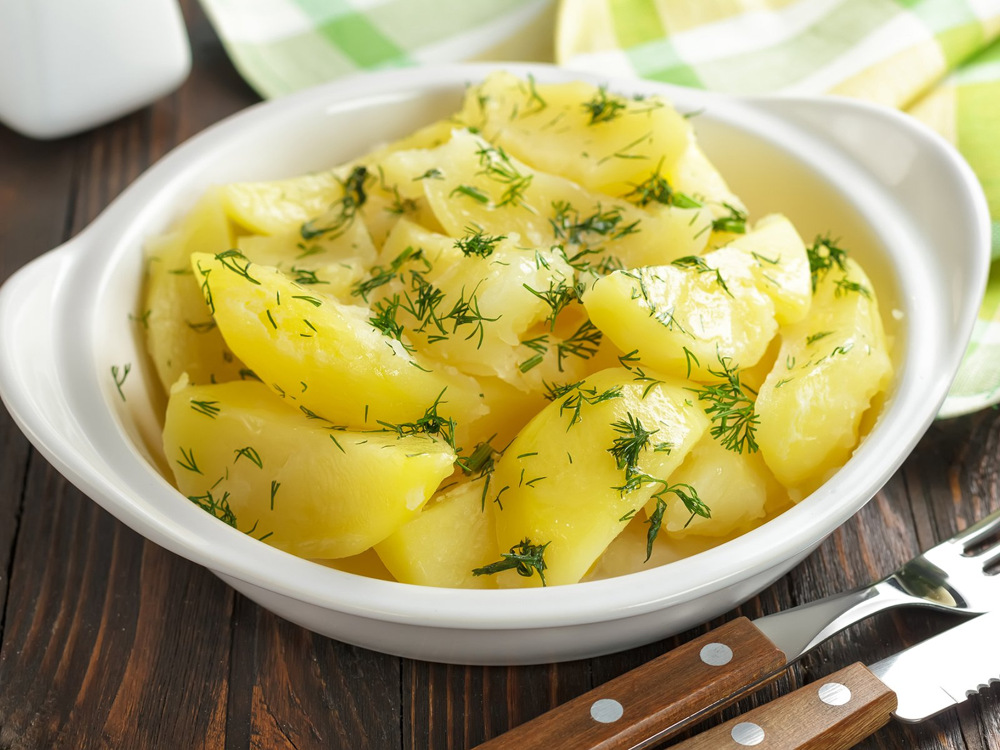

salzkartoffeln

Boiled Potatoes with gracious Salt :)
Ingredients
Steps for the Preperation
- Peal the Potatoes
- Fill a pod with just enough water that they are covered
- Let them boil under full heat
- Once it started boiling wait for an additional 20 minutes e viola enjoy :)